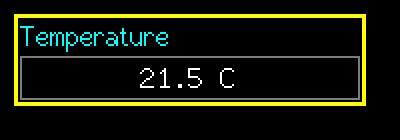
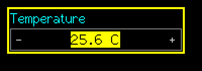

SuperSpinBox
An integer with range, step, wrap, decimals, prefix and suffix. The encoder changes the whole value.
Editable (modal edit)src/SuperSpinBox.h
What it looks like


Real renders from the library (headless, dark theme, Font2, shown at 2x).
Quick start
SuperSpinBox temp(&lcd, 10, 10, 120, &lgfx::fonts::Font2, &Enc, &BtnA, &BtnB);
temp.SetRange(-400, 1250); temp.SetStep(5);
temp.SetDecimals(1); temp.SetSuffix(" C"); // value 125 shows as 12.5 C
temp.SetValue(215);Unique features
SetDecimals(n)only affects display: the value stays an integer (125 shows as 12.5), so store and compare integers.- Optional wrap-around:
SetWrap(true)goes from max to min. - Prefix / suffix text (
"$"," C"," %"). - Digits get a fixed cell width so the text does not shift while the value changes.
SetValidator(fn)can refuse a value at accept.
GUI workflow
Encoder changes the value by detents x step (speed scaling applies). A short/long = accept, B short = cancel, B long = revert and keep editing.
Touch: touching activates it (even idle); drag up/down changes the value live; lift accepts. A plain tap: left third = one step down, right third = one step up (and accepts), middle = accept unchanged. - / + hints are drawn while editing (ShowTouchHints = false hides them).
Event workflow
edit contract. OnChange per step; OnAccept once.
Main API
| Call | What it does |
|---|---|
SetRange(min,max) | Clamps the current value |
SetStep(s) | Change per detent |
SetWrap(b) | Wrap at the ends |
SetDecimals(d) | 0-6 display decimals |
SetPrefix/SetSuffix | Text around the number |
SetValue/GetValue | Integer value |
Tips and tricks
TipUse a large step with a fine decimal display for quick coarse changes (step 5 with 1 decimal).
Pitfalls
Watch outWith decimals,
SetRange(0, 100) means 0.0 to 10.0. Think in scaled integers.Watch outRapid encoder ticks accelerate on purpose; do not "fix" big jumps in a test by faking ticks.